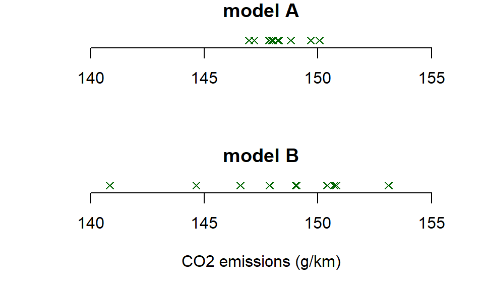

7 Chapter 5 problems
- Suppose \(X_1,\ldots,X_{10}\) are independent and identically distributed variables, each having the \(N(\mu, \sigma^2)\) distribution. Denote the corresponding observed values by \(x_1,\ldots,x_{10}\). Given the following summary statistics and using some of the R output below, calculate a 90% confidence interval for \(\mu\). \[ \sum_{i=1}^{10}x_i = 47.8,\quad\sum_{i=1}^{10}x_i^2 = 232.5816. \]
## [1] 1.383029 1.833113 2.262157- The following data are measurements of plasma citrate concentrations from 9 volunteers (in micromoles per litre):
## [1] 93 116 125 144 105 89 116 151 137Assume that the population of such measurements is normally distributed. The observations are stored in a vector called plasma. Calculate a 95% confidence interval for the population mean and population variance based on these data, using (some of) the R output below.
## [1] 1076## [1] 132438## [1] -2.3060 -1.8595 1.8595 2.3060## [1] 2.1797 17.5345- A biased coin is tossed 50 times, and 32 heads are observed. Calculate an approximate 95% confidence interval for the probability a coin toss will result in a heads.
- An election is to be held between two candidates, and an opinion poll has been taken to see what percentage of the electorate will vote for candidate A. Assume the sample is representative, the respondents answer truthfully, and no-one is intending to change their minds; the only concern regarding the reliability of the poll is the sample size.
If 60% answered that they intended to vote for candidate A, and 40% answered that they intended to vote for candidate B, how large would the sample size need to be to persuade you the poll would reliably predict the result? Some R output to help you is below.
## [1] 0.84162 1.28155 1.64485 2.32635- Suppose \(X\sim N(\beta, 1)\), with \(\beta\) unknown. It is intended to use the observed value of \(X\) to provide an interval estimate for \(\beta\), where the interval will be given by \([X-1.96,\quad X+1.96]\)
- Sketch the \(N(\beta,1)\) density function, and indicate \(\beta\) on the \(x\)-axis Indicate on your sketch (on the \(x\)-axis) what possible values \(X\) could take, such that \([X-1.96,\quad X+1.96]\) would contain \(\beta\).
- Using the fact that the 97.5th percentile of the standard normal distribution is 1.96, what is the probability that the random interval \([X-1.96,\quad X+1.96]\) will contain \(\beta\)?
- Fill in the missing value in the following statement.
\([X-1.96,\quad X+1.96]\) is a …..% confidence interval for \(\beta.\)
- New cars from a factory are tested for their CO\(_2\) emissions, measured in grammes per kilometre travelled. The tests are conducted in a laboratory, under carefully controlled conditions. Twenty cars in total are tested: ten each of two models of car, A and B. For both models, the manufacturer has set a CO\(_2\) emissions target of 145,g/km. There is particular interest in whether the emissions will exceed 150 g/km: this would increase the tax that needs to be paid when the car is registered.
Define \(\mu_A\) and \(\mu_B\) to be the population mean emissions respectively for all cars of model A and B that the factory produces. Denote the two corresponding sample means by \(\bar{x}_A\) and \(\bar{x}_B\). Data for the ten cars of each model are stored as vectors A and B in R.
- Given the following R output, write down the value of \(\bar{x}_A\). Given that \(\bar{x}_A<150\),g/km, why would it be wrong to conclude that \(\mu_A\) must be less than 150,g/km?
## [1] 1483## [1] 8.7314- By coincidence, the two samples have the same mean, but different variances:
## [1] 1483## [1] 113.03The data are displayed in a plot (without a \(y\)-axis) below.

You are asked to assess whether, for each model of car, the population mean emission value could be more than 150,g/km. By considering the plot, explain what is wrong with the following conclusion:
Because \(\bar{x}_A = \bar{x}_B\), there is no reason to think \(\mu_B > 150\)g/km is more plausible than \(\mu_A > 150\)g/km.
- Assuming the observations are normally distributed, calculate 99% confidence intervals for \(\mu_A\) and \(\mu_B\), using the following R output. What conclusions would you draw about whether \(\mu_A > 150\)g/km and/or \(\mu_B > 150\)g/km?
## [1] 3.2498- Using the following R output, calculate an approximate 95% confidence interval for the proportion of cars of model B that have emissions exceeding 150g/km. Why is this interval “approximate”?
## [1] 4## [1] 1.96If we wanted the confidence interval to have width of no more than 0.1, how many cars would be needed? Hints:
- Suppose in a future sample of \(n\) cars, we observe \(x\) cars to have emissions exceeding 150g/km. If we have \(n=100\) and \(x=35\), how wide would the confidence interval be?
- Now suppose, with \(n=100\), you didn’t know the corresponding value of \(x\). Would you still know the width of the confidence interval? Can you work out the widest possible width the interval could be?
- Now for any sample size \(n\), consider what the widest possible confidence interval could be.
- Challenge problem. A random observation \(X\) is to be drawn from the \(U[0,\theta]\) distribution, with \(\theta\) unknown. A one-sided 95% confidence interval for \(\theta\) is to be constructed, of the form \([kX,\infty)\), with \(k\) a suitably chosen constant. (This is called a one-sided confidence interval, as we are only attempting to provide a lower limit for \(\theta\)). Derive the value of \(k\).